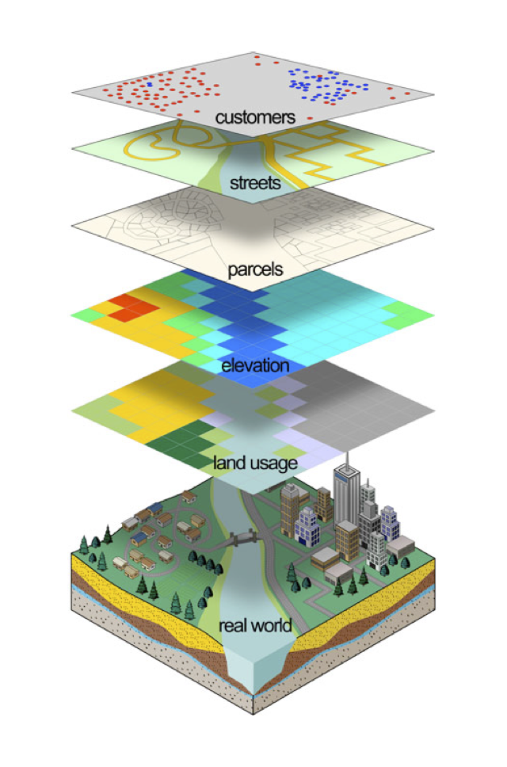
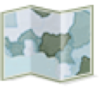
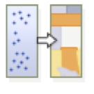
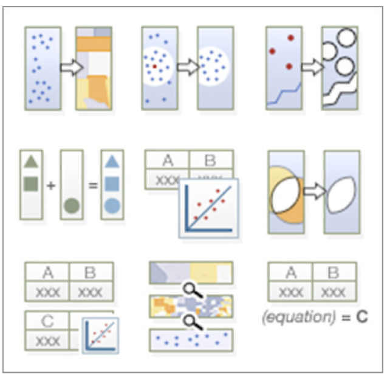
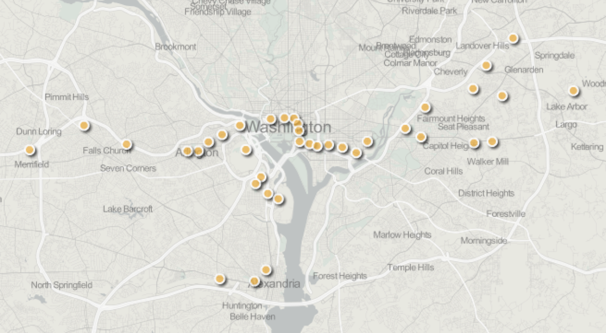
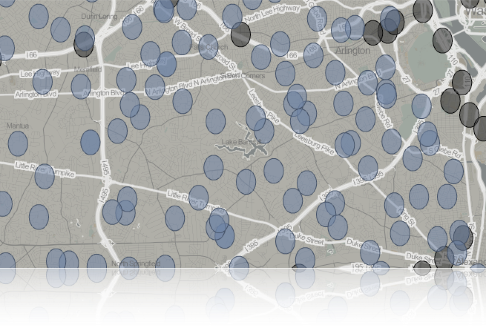
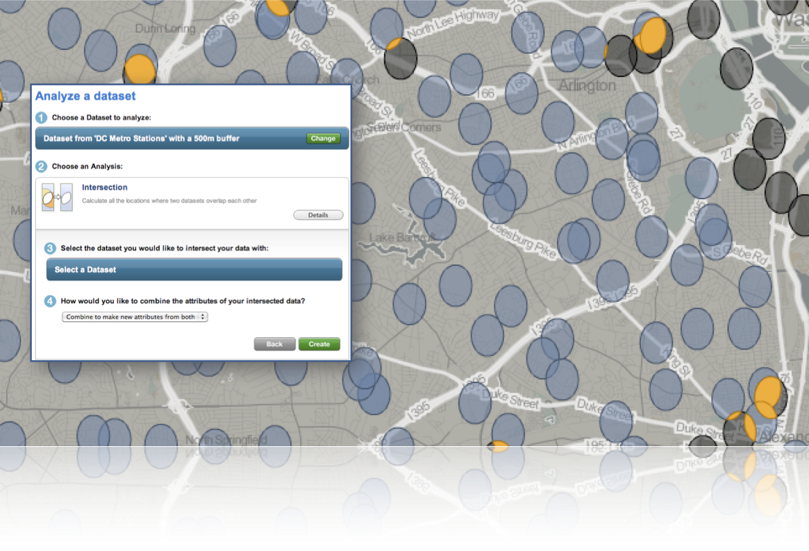
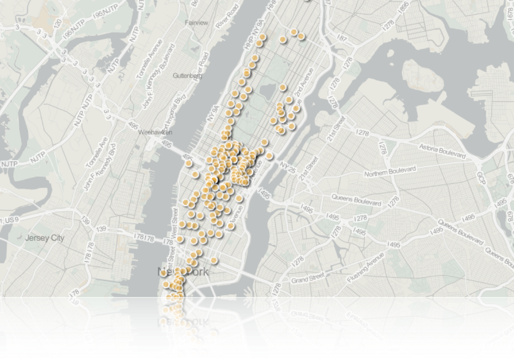
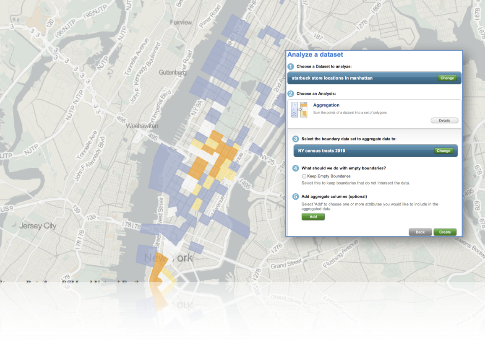

Collaborative GeoData Sharing & Analysis
Workshop at OKFestival 2012
Andrew Turner - @ajturner
ajturner.github.com/geodata-workshop
Who am I?


Power of Place
Calgary Herald - Dog Population

Toronto Sun - Pedestrian Accidents
 OpenStreetMap - January 26, 2010
OpenStreetMap - January 26, 2010
OpenStreetMap Haiti
Basic Principles
- Open Access to data
- Visualize on maps
- Analyze questions
Access
Huffman's Principles of Data Sharing
- Create immediate value for anyone contributing data
- Make contributor’s data available back to them with improvements
- Share derivative works back with the data sharing community
http://bit.ly/hWKuHO
#beer4data
"The Taj": Jalalabad, Afghanistan
Cake Test

Types of Data

Points
{ "type": "Point", "coordinates": [100.0, 0.0] }

Lines
{ "type": "LineString",
"coordinates": [ [100.0, 0.0], [101.0, 1.0] ]
}
Polygons
{ "type": "Polygon",
"coordinates": [
[ [100.0, 0.0], [101.0, 0.0], [101.0, 1.0], [100.0, 1.0], [100.0, 0.0] ]
]
}

Crowdsourced data
Locals & TouristsOpenStreetMap
Flickr

Imagery
Historic Maps
Visualize
Let's Builds some Maps.
- Upload Data (and clean it up)
- Find and Download Data
- Explore cartographic styling
- Embed and Share
Local Government
OpenStreetMap
GeoCommons

ArcGIS Online
Mapping Data
- Visit 596acres.org and download their spreadsheet
- ...or just get the URL to the CSV
- Upload the file or register the URL at GeoCommons.com
- Walk through the process. You could do this in the map, but we have time...
- Choose "Map Data"
- Choose to Style by Color or Size
- Embed in facebook
check out geocommons.com/maps/196311
Analyze
Buffer
Radius buffer from a point, line or polygon
Buffer
Radius buffer from a point, line or polygon
Intersection
Overlap between two polygonal areas, lines or points
Intersection
Overlap between two polygonal areas, lines or points
Aggregation
Group data by arbitrary geographic boundaries
Aggregation
Group data by arbitrary geographic boundaries

Project: Community Projects Analysis
Analyzing your Data
- Continuing from the "596 Acres map layer"...
- Click on the layer, choose 'Analyze'
- Choose "Aggregation"
- Change Boundary, Search for "NYC Boundary"
- Choose "Brooklyn Neighborhood Boundaries"
- Add "Area (sq ft.)" Average and "Area (sq. ft.)" Sum
- After it finishes processing, choose to style color by "Sum of area".
- Re-order the layers and play with styling.
check out geocommons.com/maps/196311

Project: Social Media Dashboard
Esri Tools for Social MediaHow to create the dashboard
- Start with the example map
- Customize & Save as...
- Turn Sharing on
- Download the Social Media dashboard code
- Edit the config file - change the search terms
- Put it on a webserver
More for Developers
 resources.arcgis.com & esri.github.com
resources.arcgis.com & esri.github.com
Mapping Tools